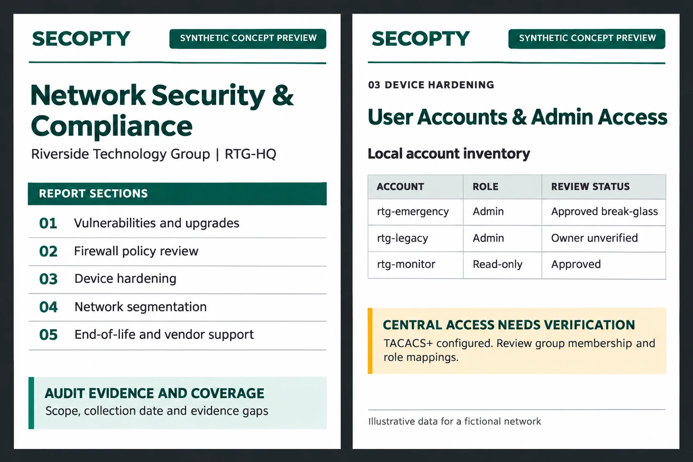

Network security & compliance reporting
Know what to fix. Show your evidence.
Review vulnerabilities, firewall rules and network controls with findings your engineers can act on and evidence your auditors can verify.
Illustrative audit evidence
Privileged local account
A local administrator account was found on a headquarters switch. Its owner needs verification against the approved account register.
Evidence: Redacted device configuration and account register.
Five network security reports
Vulnerabilities and upgrades
Match device models and installed software to vendor advisories. See applicable CVEs, supported target releases and fixes that need manual verification.
Firewall policy review
Read Palo Alto, Cisco ASA and Check Point rules in plain English. Filter by source, destination, service, action and logging, then trace a finding back to the original rule.
Device hardening
Check management access, logging and other settings against your baseline. Review local accounts, administrator privileges, approved emergency accounts and gaps in central authentication evidence.
Network segmentation
Assess agreed boundaries using firewall policies, routing and NAT. See which paths are permitted by the evidence and which need verification.
End-of-life and vendor support
Identify devices approaching the end of security updates and prioritise upgrades or replacement using vendor lifecycle notices.
Explore a security report preview
Illustrative output for the fictional Riverside Technology Group. Reporting capabilities are in development.


RTG-HQ · Local administrator inventory
- rtg-emergency · Administrator
- Approved emergency access
- rtg-legacy · Administrator
- Account owner requires verification
- rtg-monitor · Read-only
- Approved monitoring account
TACACS+ is configured. Central group membership and assigned privileges require separate evidence.
From network evidence to audit findings
Collect evidence
Agree the scope, then collect authorised read-only configuration and inventory exports.
Assess controls
Check agreed baselines and vendor guidance. Record the scope, collection date and evidence gaps.
Review and refresh
Give engineers a prioritised list of fixes. Show auditors results, approved exceptions and changes between assessments.
Scope your assessment
Start with the devices, sites and controls you need to review. Agree which reports you need, what evidence is available and whether to schedule repeat assessments.
Questions about Secopty
What will auditors receive?
A summary mapped to agreed controls, with source evidence, coverage gaps and exceptions. The planned firewall rulebook and account inventory are designed for filtering.
What evidence is needed?
Device inventory, software versions and authorised configuration exports. Some checks also need identity-system evidence, an approved account register or documented network boundaries.
Does a report certify compliance?
Secopty provides evidence against the agreed network controls. The auditor determines the compliance outcome.
Discuss your network security assessment.
Tell us which sites, devices and controls are in scope.
Contact
Tell us what you need to assess.
Share your network scope, audit requirements and reporting priorities.
- Request a network assessment or a service proposal
- Ask about report previews for your evaluation team